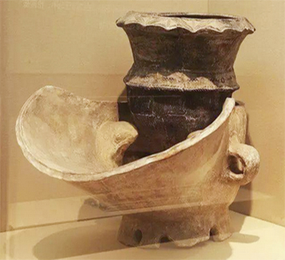
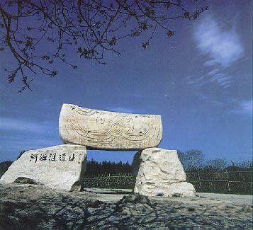
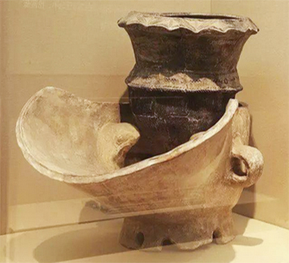
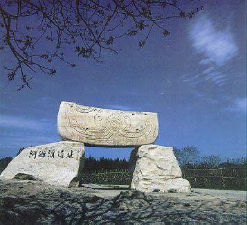
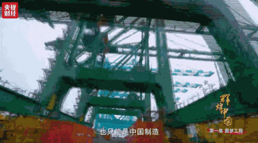

Burn it!
China
The Great Blessing of the People
and the Great Power of the Country

The Great Blessing of the People
and the Great Power of the Country

 



The serious imbalance between energy and consumption makes coal
transportation from north to south the core component of China's economic development strategy allocation system.
Today, coal forms a highly automated dry bulk transportation system.
This system is continuously delivering energy to the south of China.
 Made in China
Made in China
Carry the world

以 “China Port”
托举 The Chinese Dream
Over the past five years, China's total import and export of goods accounted for the proportion of the world, always ranking the first two.
As the protagonist of global trade, more efficient ports and equipment beyond the past are drawing the world's attention.